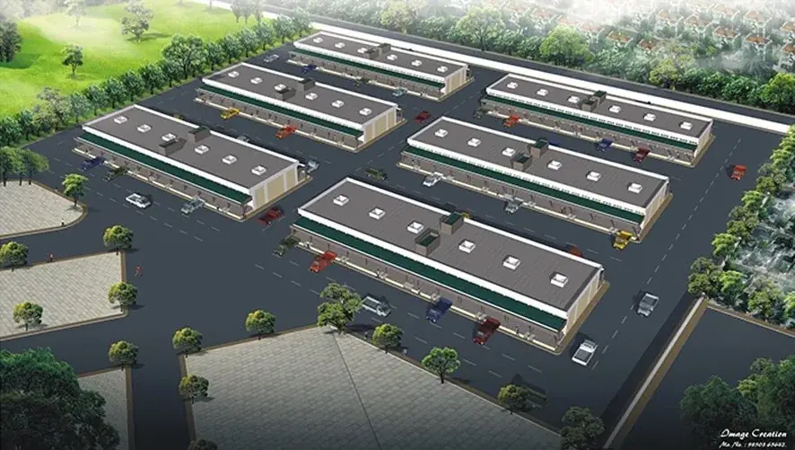
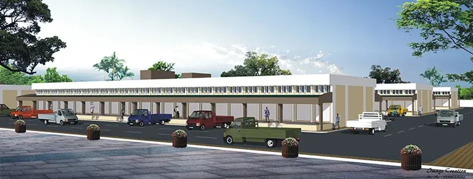

Storage, trade and training for Nagpur's market committee
Three designs for the Agricultural Produce Market Committee, Nagpur — vegetable godowns at the Kalamna market yard, a market shed, and an auditorium and training centre. Together they show what a market yard needs beyond the auction floor.
- Client
- Agricultural Produce Market Committee, Nagpur
- Site (godowns)
- Kh. No. 112, J. N. Market Yard, Kalamna
- Discipline
- Architecture
- Years · status
- To be confirmed

Vegetable godowns in two sizes
The drawing is titled as a proposed design for vegetable godowns, "larger & smaller", at Kalamna. The rendering shows six long single-storey blocks set out in rows, each pair facing a shared internal road so trucks can draw up along the full length of the building.
Offering two sizes lets one yard serve both larger and smaller traders.
- Project by
- A. P. M. C. Nagpur
- Title
- Proposed design for vegetable godowns (larger & smaller) at Kh. No. 112, J. N. Market Yard, Kalamna
- Architect
- A. B. Chinchmalatpure, Nagpur
A market shed built around the truck
A long, low shed with a deep roof and an open front. In the rendering, pick-ups and tempos pull straight up to the bays — loading happens in the shade, off the road.
The building is almost all roof: the simplest answer to Vidarbha's sun and rain for a place where produce changes hands.

An auditorium and training centre
The sign across the entrance reads सभागृह तथा प्रशिक्षण केंद्र — auditorium and training centre. A glazed entrance tower carries the committee's emblem; lower wings in stone-coloured render step back on either side.
It is the civic face of the market: a place for meetings, farmer training and events, not storage.

One of five market committees
The practice lists five Agricultural Produce Market Committees in Nagpur district as clients. Its project list describes this work as warehouse godowns, shop-cum-godowns and road works.
- 01NagpurThis case study
- 02KatolScope TBC
- 03SaonerScope TBC
- 04KalmeshwarScope TBC
- 05ParshiwaniScope TBC
What it shows a new client
Public market buildings must handle heavy daily use, pass public scrutiny and serve many users at once. Appointments from five market committees are evidence a developer, institution or homeowner can weigh.
The same habits — clear drawings, coordinated structural, electrical and plumbing consultants, regular site supervision — are what the practice brings to a bungalow or an office.
Discuss a public or institutional project